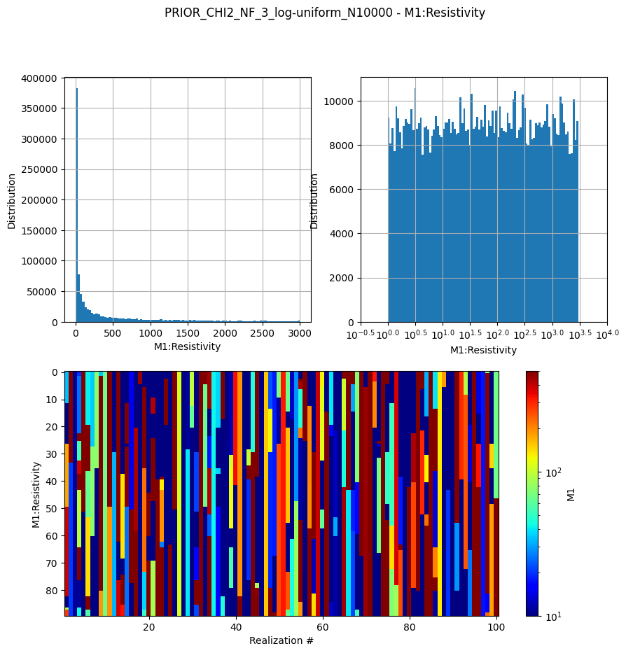
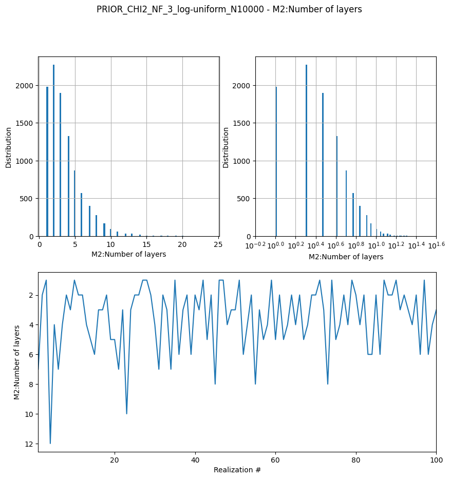
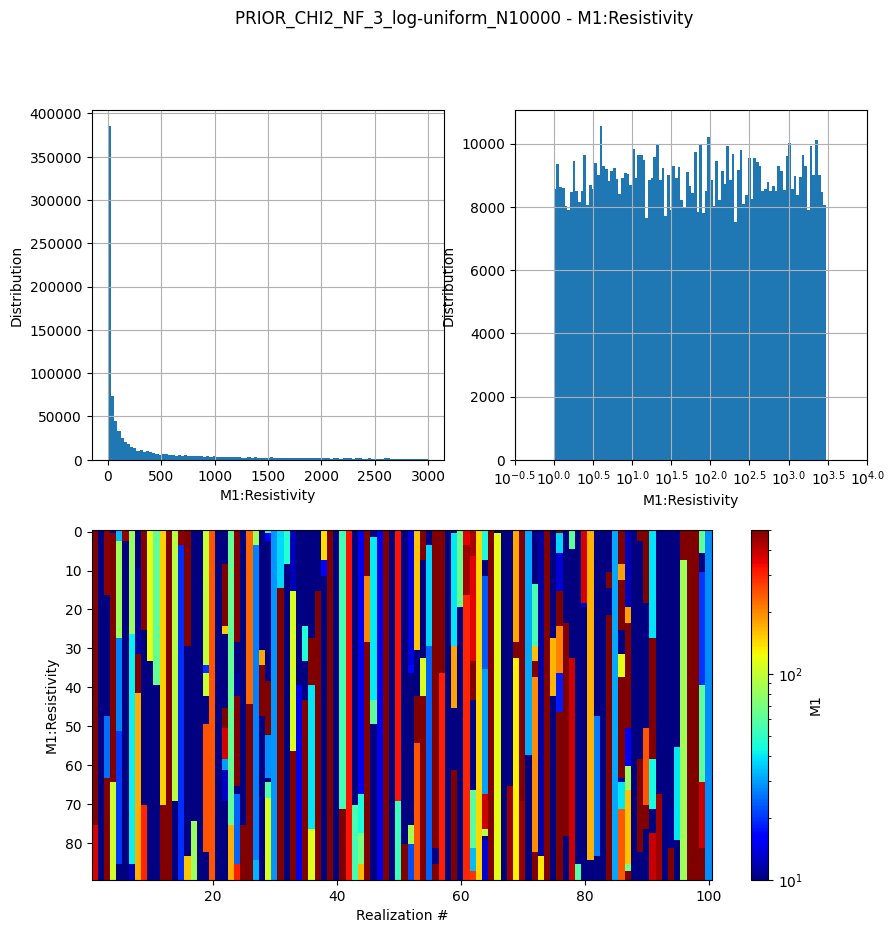
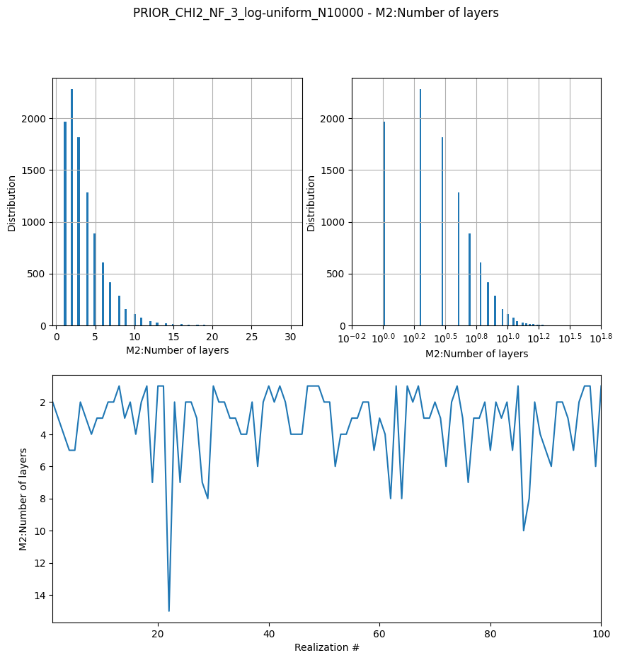
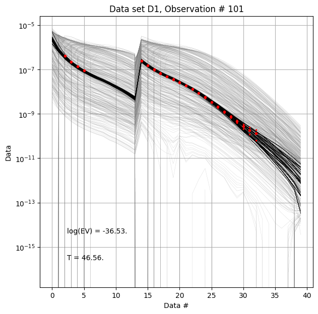
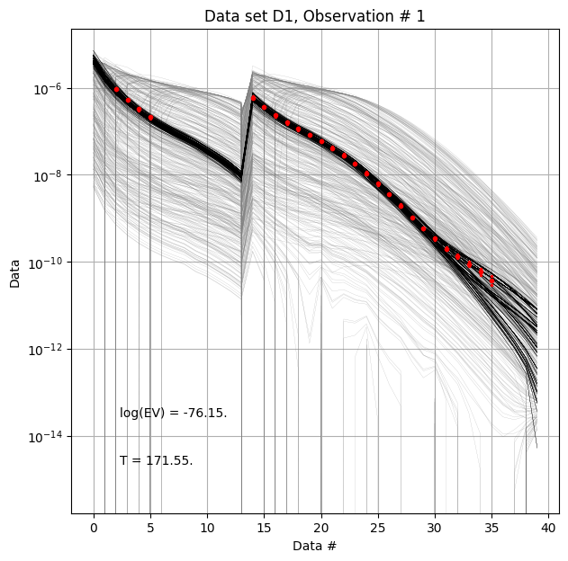
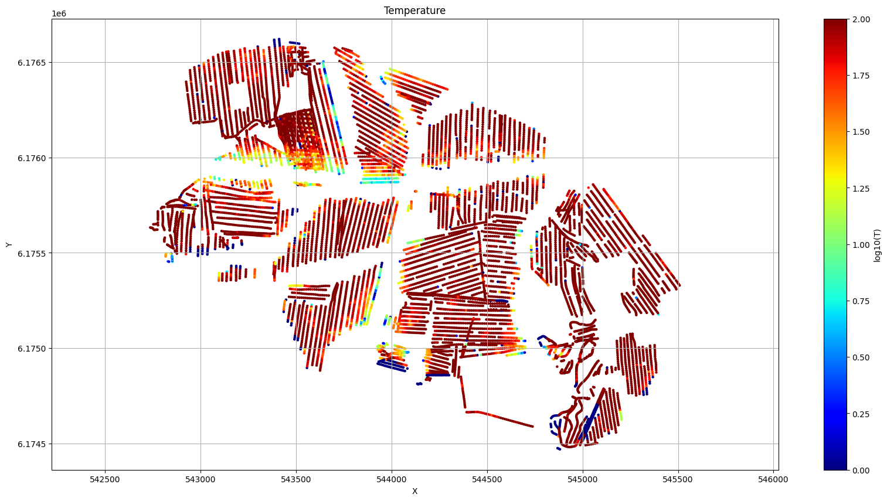
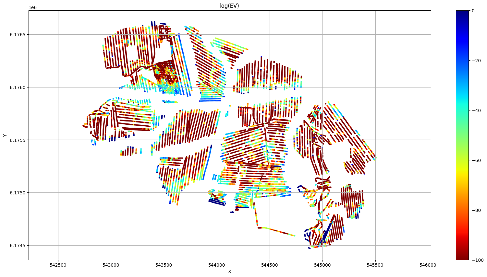
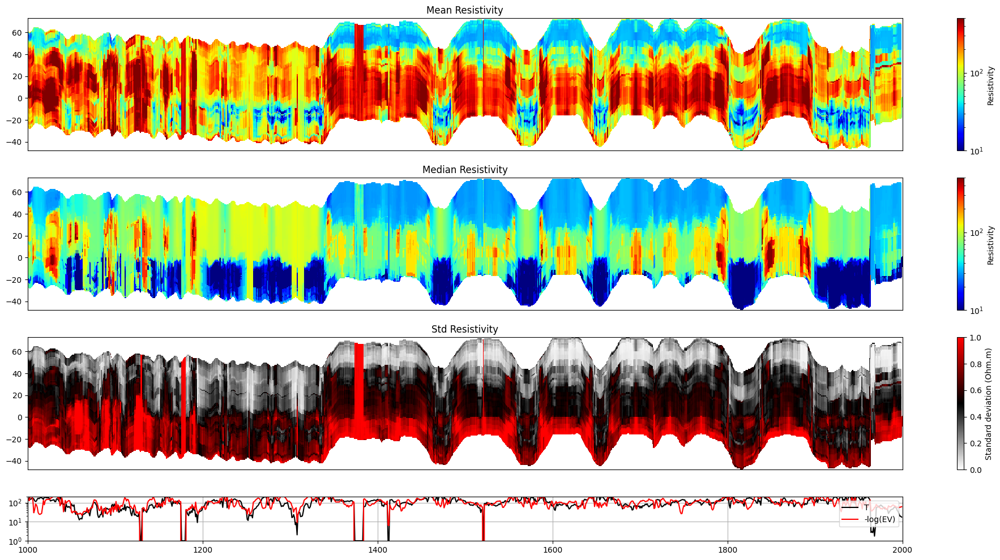
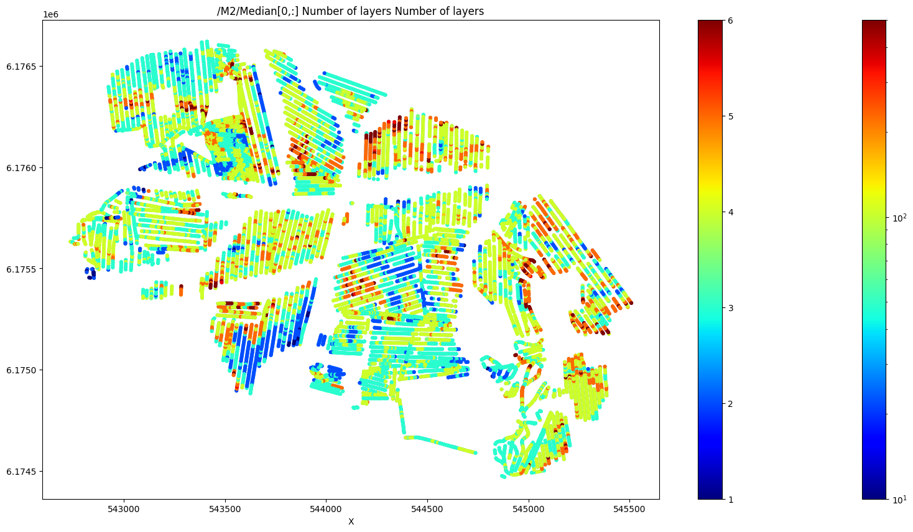

Getting started with INTEGRATE
This notebook contains a simple example of geeting started with INTEGRATE
[1]:
try:
# Check if the code is running in an IPython kernel (which includes Jupyter notebooks)
get_ipython()
# If the above line doesn't raise an error, it means we are in a Jupyter environment
# Execute the magic commands using IPython's run_line_magic function
get_ipython().run_line_magic('load_ext', 'autoreload')
get_ipython().run_line_magic('autoreload', '2')
except:
# If get_ipython() raises an error, we are not in a Jupyter environment
# # # #%load_ext autoreload
# # # #%autoreload 2
pass
[2]:
import integrate as ig
# check if parallel computations can be performed
parallel = ig.use_parallel(showInfo=1)
Notebook detected. Parallel processing is OK
[3]:
case = 'DAUGAARD'
files = ig.get_case_data(case=case)
f_data_h5 = files[0]
f_data_h5 = 'DAUGAARD_AVG.h5'
file_gex= ig.get_gex_file_from_data(f_data_h5)
print("Using data file: %s" % f_data_h5)
print("Using GEX file: %s" % file_gex)
Getting data for case: DAUGAARD
--> Got data for case: DAUGAARD
Using data file: DAUGAARD_AVG.h5
Using GEX file: TX07_20231016_2x4_RC20-33.gex
1. Setup the prior model (\(\rho(\mathbf{m},\mathbf{d})\)
In this example a simple layered prior model will be considered
1a. first, a sample of the prior model parameters, \(\rho(\mathbf{m})\), will be generated
[4]:
N=10000
# Layered model
f_prior_h5 = ig.prior_model_layered(N=N,lay_dist='chi2', NLAY_deg=3, RHO_min=1, RHO_max=3000)
# Plot some summary statistics of the prior model
ig.plot_prior_stats(f_prior_h5)




1b. Then, a corresponding sample of \(\rho(\mathbf{d})\), will be generated
[5]:
f_prior_data_h5 = ig.prior_data_gaaem(f_prior_h5, file_gex, parallel=parallel, showInfo=0, Ncpu=64)
prior_data_gaaem: Using 64 parallel threads.
Time elapsed: 14.1 s, for 10000 soundings. 1.405 ms/sounding. 711.6it/s
Time elapsed: 16.1 s, for 10000 soundings. 1.612 ms/sounding. 620.3it/s
Sample the posterior \(\sigma(\mathbf{m})\)
The posterior distribution is sampling using the extended rejection sampler.
[6]:
N_use = N
f_post_h5 = ig.integrate_rejection(f_prior_data_h5,
f_data_h5,
N_use = N_use,
showInfo=1,
parallel=parallel)
File POST_DAUGAARD_AVG_PRIOR_CHI2_NF_3_log-uniform_N10000_TX07_20231016_2x4_RC20-33_Nh280_Nf12_Nu10000_aT1.h5 allready exists
Overwriting...
<--INTEGRATE_REJECTION-->
f_prior_h5=PRIOR_CHI2_NF_3_log-uniform_N10000_TX07_20231016_2x4_RC20-33_Nh280_Nf12.h5
f_data_h5=DAUGAARD_AVG.h5
f_post_h5=POST_DAUGAARD_AVG_PRIOR_CHI2_NF_3_log-uniform_N10000_TX07_20231016_2x4_RC20-33_Nh280_Nf12_Nu10000_aT1.h5
All done
T_av=120.6, Time= 11.1s/11693 soundings , 1.0ms/sounding, 1049.0it/s
D1: NOT RECOGNIZED
M1: CONTINUOUS
nm=90, nsounding=11693, nr=400
M_mean.shape=(11693, 90)
Creating /M1/Mean in POST_DAUGAARD_AVG_PRIOR_CHI2_NF_3_log-uniform_N10000_TX07_20231016_2x4_RC20-33_Nh280_Nf12_Nu10000_aT1.h5
Creating /M1/Median in POST_DAUGAARD_AVG_PRIOR_CHI2_NF_3_log-uniform_N10000_TX07_20231016_2x4_RC20-33_Nh280_Nf12_Nu10000_aT1.h5
Creating /M1/Std in POST_DAUGAARD_AVG_PRIOR_CHI2_NF_3_log-uniform_N10000_TX07_20231016_2x4_RC20-33_Nh280_Nf12_Nu10000_aT1.h5
Creating /M1/LogMean in POST_DAUGAARD_AVG_PRIOR_CHI2_NF_3_log-uniform_N10000_TX07_20231016_2x4_RC20-33_Nh280_Nf12_Nu10000_aT1.h5
M2: CONTINUOUS
nm=1, nsounding=11693, nr=400
M_mean.shape=(11693, 1)
Creating /M2/Mean in POST_DAUGAARD_AVG_PRIOR_CHI2_NF_3_log-uniform_N10000_TX07_20231016_2x4_RC20-33_Nh280_Nf12_Nu10000_aT1.h5
Creating /M2/Median in POST_DAUGAARD_AVG_PRIOR_CHI2_NF_3_log-uniform_N10000_TX07_20231016_2x4_RC20-33_Nh280_Nf12_Nu10000_aT1.h5
Creating /M2/Std in POST_DAUGAARD_AVG_PRIOR_CHI2_NF_3_log-uniform_N10000_TX07_20231016_2x4_RC20-33_Nh280_Nf12_Nu10000_aT1.h5
Creating /M2/LogMean in POST_DAUGAARD_AVG_PRIOR_CHI2_NF_3_log-uniform_N10000_TX07_20231016_2x4_RC20-33_Nh280_Nf12_Nu10000_aT1.h5
All done
T_av=121.0, Time= 17.5s/11693 soundings , 1.5ms/sounding, 667.1it/s
D1: NOT RECOGNIZED
M1: CONTINUOUS
nm=90, nsounding=11693, nr=400
M_mean.shape=(11693, 90)
Creating /M1/Mean in POST_DAUGAARD_AVG_PRIOR_CHI2_NF_3_log-uniform_N10000_TX07_20231016_2x4_RC20-33_Nh280_Nf12_Nu10000_aT1.h5
Creating /M1/Median in POST_DAUGAARD_AVG_PRIOR_CHI2_NF_3_log-uniform_N10000_TX07_20231016_2x4_RC20-33_Nh280_Nf12_Nu10000_aT1.h5
Creating /M1/Std in POST_DAUGAARD_AVG_PRIOR_CHI2_NF_3_log-uniform_N10000_TX07_20231016_2x4_RC20-33_Nh280_Nf12_Nu10000_aT1.h5
Creating /M1/LogMean in POST_DAUGAARD_AVG_PRIOR_CHI2_NF_3_log-uniform_N10000_TX07_20231016_2x4_RC20-33_Nh280_Nf12_Nu10000_aT1.h5
M2: CONTINUOUS
nm=1, nsounding=11693, nr=400
M_mean.shape=(11693, 1)
Creating /M2/Mean in POST_DAUGAARD_AVG_PRIOR_CHI2_NF_3_log-uniform_N10000_TX07_20231016_2x4_RC20-33_Nh280_Nf12_Nu10000_aT1.h5
Creating /M2/Median in POST_DAUGAARD_AVG_PRIOR_CHI2_NF_3_log-uniform_N10000_TX07_20231016_2x4_RC20-33_Nh280_Nf12_Nu10000_aT1.h5
Creating /M2/Std in POST_DAUGAARD_AVG_PRIOR_CHI2_NF_3_log-uniform_N10000_TX07_20231016_2x4_RC20-33_Nh280_Nf12_Nu10000_aT1.h5
Creating /M2/LogMean in POST_DAUGAARD_AVG_PRIOR_CHI2_NF_3_log-uniform_N10000_TX07_20231016_2x4_RC20-33_Nh280_Nf12_Nu10000_aT1.h5
[7]:
# This is typically done after the inversion
# ig.integrate_posterior_stats(f_post_h5)
Plot some statistic from \(\sigma(\mathbf{m})\)
[8]:
ig.plot_data_prior_post(f_post_h5, i_plot=100)
ig.plot_data_prior_post(f_post_h5, i_plot=0)


[9]:
# Plot the Temperature used for inversion
ig.plot_T_EV(f_post_h5, pl='T')
# Plot the evidnence (prior likelihood) estimated as part of inversion
ig.plot_T_EV(f_post_h5, pl='EV')


[10]:
ig.plot_profile(f_post_h5, i1=1000, i2=2000, im=1)

[11]:
# Plot a 2D feature: Resistivity in layer 10
ig.plot_feature_2d(f_post_h5,im=1,iz=12, key='Median', uselog=1, cmap='jet', s=10)
#ig.plot_feature_2d(f_post_h5,im=1,iz=80,key='Median')
try:
# Plot a 2D feature: The number of layers
ig.plot_feature_2d(f_post_h5,im=2,iz=0,key='Median', title_text = 'Number of layers', uselog=0, clim=[1,6], cmap='jet', s=12)
except:
pass

[12]:
f_csv, f_point_csv = ig.post_to_csv(f_post_h5)
Writing to POST_DAUGAARD_AVG_PRIOR_CHI2_NF_3_log-uniform_N10000_TX07_20231016_2x4_RC20-33_Nh280_Nf12_Nu10000_aT1_M1.csv
----------------------------------------------------
Creating point data set: Median
Creating point data set: Mean
Creating point data set: Std
- saving to : POST_DAUGAARD_AVG_PRIOR_CHI2_NF_3_log-uniform_N10000_TX07_20231016_2x4_RC20-33_Nh280_Nf12_Nu10000_aT1_M1_point.csv
Creating point data set: Mean
Creating point data set: Std
- saving to : POST_DAUGAARD_AVG_PRIOR_CHI2_NF_3_log-uniform_N10000_TX07_20231016_2x4_RC20-33_Nh280_Nf12_Nu10000_aT1_M1_point.csv
[12]:
'POST_DAUGAARD_AVG_PRIOR_CHI2_NF_3_log-uniform_N10000_TX07_20231016_2x4_RC20-33_Nh280_Nf12_Nu10000_aT1_M1.csv'
[1]:
# Read the CSV file
#f_point_csv = 'POST_DAUGAARD_AVG_PRIOR_CHI2_NF_3_log-uniform_N100000_TX07_20231016_2x4_RC20-33_Nh280_Nf12_Nu100000_aT1_M1_point.csv'
import pandas as pd
df = pd.read_csv(f_point_csv)
df.head()
[1]:
| X | Y | Z | LINE | Median | Mean | Std | |
|---|---|---|---|---|---|---|---|
| 0 | 543822.9 | 6176069.6 | 58.82 | 140.0 | 19.942118 | 76.795006 | 0.417414 |
| 1 | 543822.9 | 6176069.6 | 57.82 | 140.0 | 19.043940 | 28.264925 | 0.191139 |
| 2 | 543822.9 | 6176069.6 | 56.82 | 140.0 | 18.328579 | 23.591038 | 0.141469 |
| 3 | 543822.9 | 6176069.6 | 55.82 | 140.0 | 18.100595 | 22.951324 | 0.136016 |
| 4 | 543822.9 | 6176069.6 | 54.82 | 140.0 | 18.100595 | 19.868954 | 0.103124 |
[ ]:
# Use Pyvista to plot X,Y,Z,Median
import pyvista as pv
import numpy as np
from pyvista import examples
#pv.set_jupyter_backend('trame')
pv.set_plot_theme("document")
p = pv.Plotter(notebook=True)
p = pv.Plotter()
filtered_df = df[(df['Median'] < 50) | (df['Median'] > 200)]
#filtered_df = df[(df['LINE'] > 1000) & (df['LINE'] < 1400) ]
points = filtered_df[['X', 'Y', 'Z']].values[:]
median = np.log10(filtered_df['Mean'].values[:])
opacity = np.where(filtered_df['Median'].values[:] < 100, 0.5, 1.0)
#p.add_points(points, render_points_as_spheres=True, point_size=3, scalars=median, cmap='jet', opacity=opacity)
p.add_points(points, render_points_as_spheres=True, point_size=6, scalars=median, cmap='hsv')
p.show_grid()
p.show()
/home/tmeha/integrate/lib/python3.11/site-packages/pyvista/jupyter/notebook.py:37: UserWarning: Failed to use notebook backend:
cannot import name 'vtk' from 'trame.widgets' (/home/tmeha/integrate/lib/python3.11/site-packages/trame/widgets/__init__.py)
Falling back to a static output.
warnings.warn(
ERROR:root:Cannot create GLX context. Aborting.
libGL error: MESA-LOADER: failed to open swrast: /usr/lib/dri/swrast_dri.so: cannot open shared object file: No such file or directory (search paths /usr/lib/x86_64-linux-gnu/dri:\$${ORIGIN}/dri:/usr/lib/dri, suffix _dri)
libGL error: failed to load driver: swrast
[ ]: